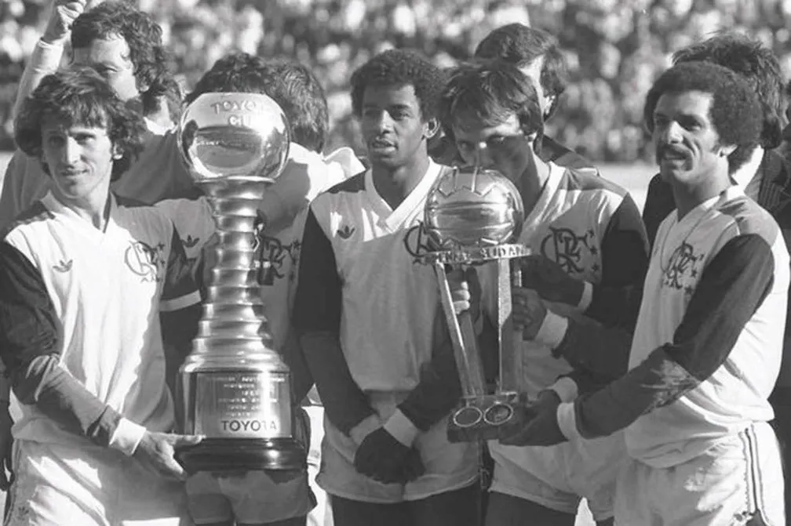
1
Mundial de Clubes
1981
O título mundial do clube. Em 13 de dezembro de 81, em Tóquio, o Flamengo venceu o Liverpool por 3 a 0, com dois gols de Nunes e um de Adílio.
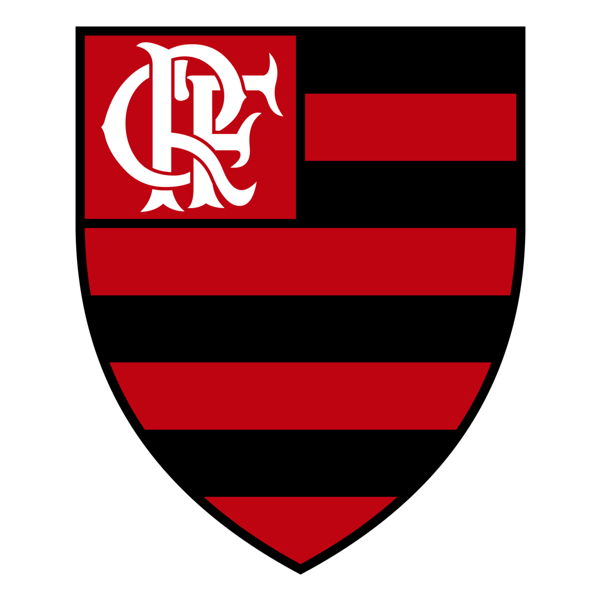
MengãoSite de torcedor feito por Kaio
Os títulos, a história e os ídolos do clube MAIOR CLUBE DO MUNDO.
Ver títulosTodos os títulos do futebol profissional masculino, do maior time do mundo.

1
1981
O título mundial do clube. Em 13 de dezembro de 81, em Tóquio, o Flamengo venceu o Liverpool por 3 a 0, com dois gols de Nunes e um de Adílio.
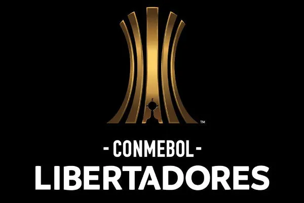
4
1981, 2019, 2022 e 2025

10
1980, 1982, 1983, 1987*, 1992, 2009, 2019, 2020, 2025 e 2026
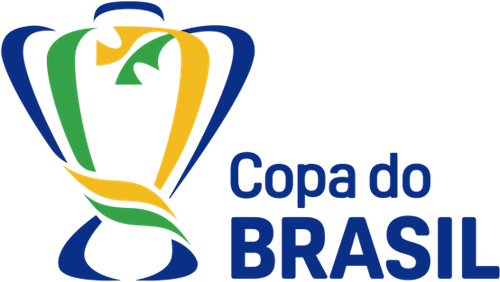
5
1990, 2006, 2013, 2022 e 2024
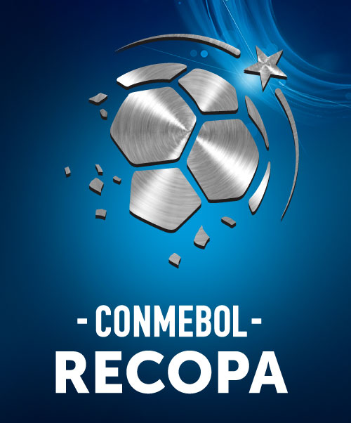
1
2020
1
1999
1
1996
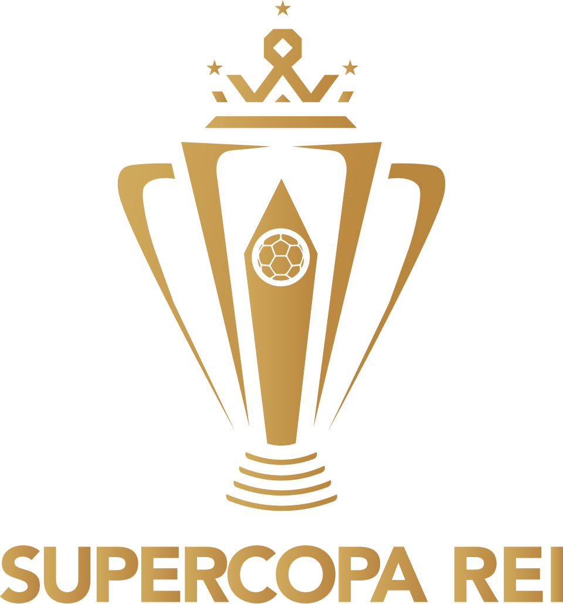
3
2020, 2021 e 2025
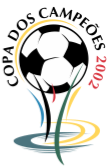
1
2001
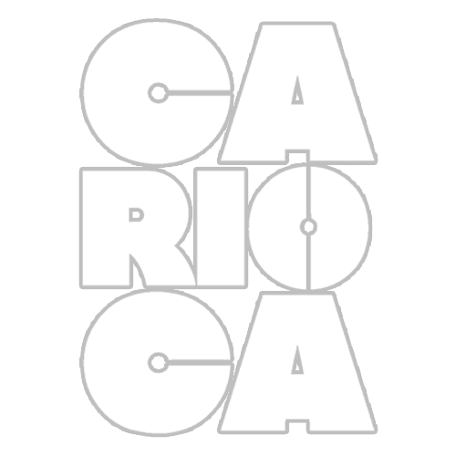
40
De 1914 a 2026
O Flamengo nasceu como clube de remo, virou potência do futebol e já viveu e vive grandes fases de muitos títulos e de longas esperas.
1895 a 1979
1980 a 1983
1990 a 2013
2019 a 2022
2024 a 2026
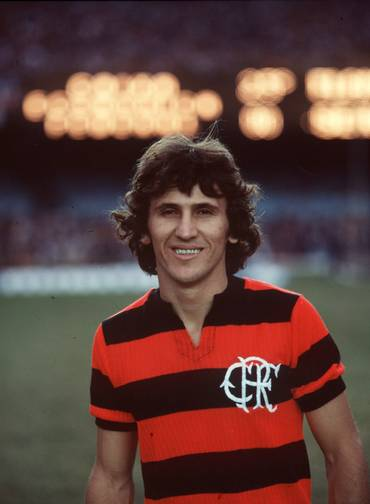
Campeão do mundo em 1981 e maior artilheiro da história do clube.
Campeão da Libertadores e do Mundial em 1981 e peça central da geração dos anos 80.
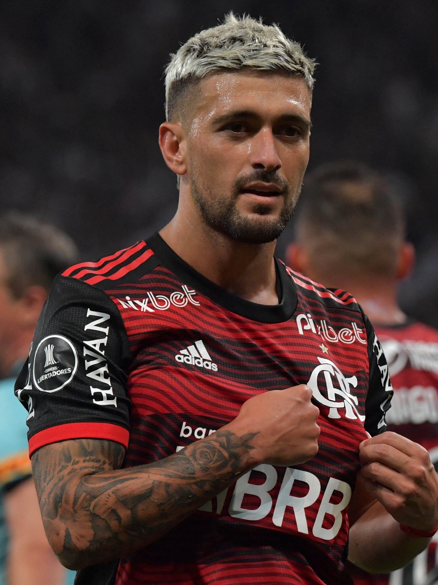
Arrascaeta é sinônimo de talento, genialidade e amor à camisa. Um ídolo que nasceu para fazer história no Flamengo..
Minha paixão pelo Flamengo veio do meu pai, foi uma paixão passada de pai para filho. Desde a primeira vez que vi o Flamengo jogar, alguma coisa mudou.
Depois que entendi o que era ser flamenguista, nunca mais consegui parar de acompanhar. Passei a assistir a todos os jogos, acompanhar os clássicos, vibrar com as vitórias e sofrer nas derrotas.
Sou completamente apaixonado pelo Flamengo. É difícil explicar, mas sinto que o Flamengo é o meu verdadeiro amor. É algo que faz parte de mim, da minha vida e de quem eu sou. E como diz o cântico, foram muitas loucuras que fiz, muitos amores que deixei e momentos em que o Flamengo sempre esteve em primeiro lugar. E faria tudo de novo!
Quero continuar sendo Flamengo pelo resto da minha vida, quero que meu filho também seja e que essa paixão continue passando de pai para filho. Quero viver muitos momentos ainda com esse clube, ver o Flamengo jogar, conquistar o mundo e chegar a lugares onde nenhum time brasileiro jamais chegou.
Sem dúvidas, a final da Libertadores de 2019. Foi uma daquelas tardes que ficam guardadas para sempre na memória de qualquer flamenguista.
O Flamengo começou perdendo para o River Plate e parecia que o título estava escapando, mas, nos minutos finais, aconteceu algo que eu nunca vou esquecer. Gabigol marcou dois gols nos acréscimos, virou o jogo e entrou de vez para a história do clube como um dos maiores ídolos da torcida.
Foi uma emoção inexplicável ver o Flamengo conquistar o bicampeonato da Libertadores daquela maneira. Um ano mágico, histórico e que mostrou que nunca podemos deixar de acreditar.
Meu maior sonho é conhecer o Maracanã. Sonho em entrar naquele estádio, sentir a energia da torcida, cantar junto, vibrar e me entregar completamente ao Flamengo.
Quero viver a emoção de comemorar um gol, cantar com milhares de flamenguistas e ver meu time jogar de perto.
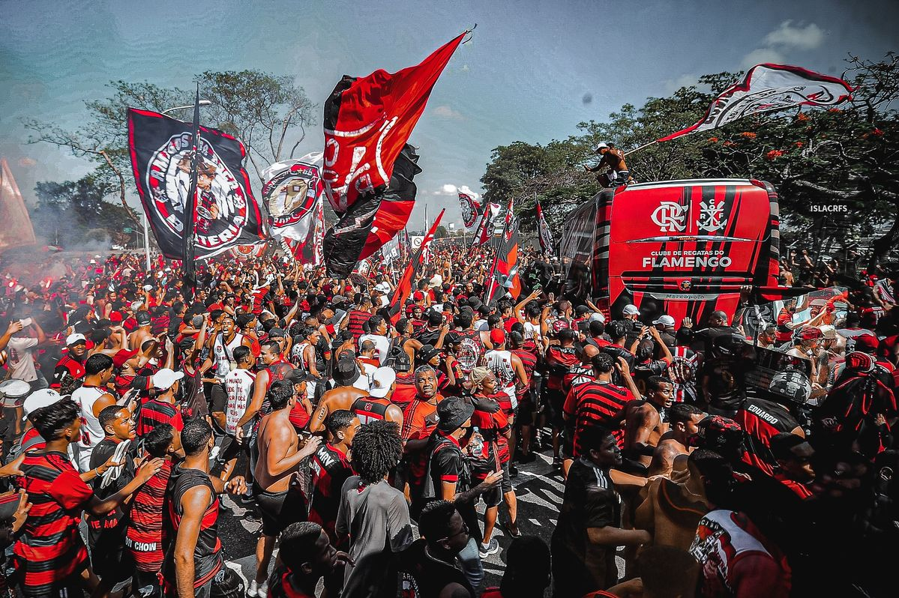
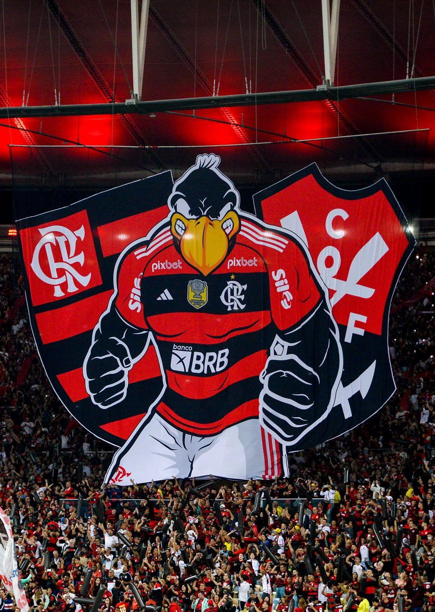
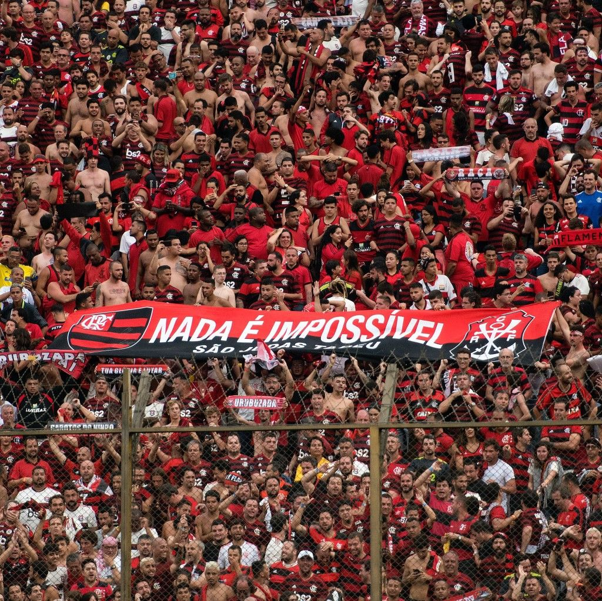
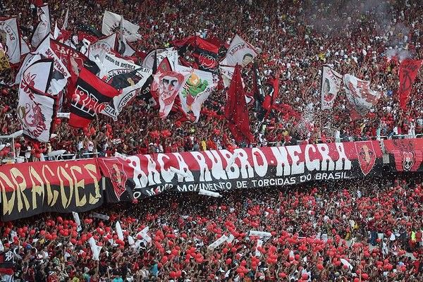
Os cantos da Nação.